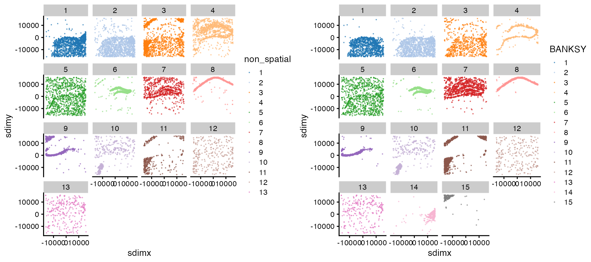

Interoperability with SingleCellExperiment
Source:vignettes/single-cell-exp.Rmd
single-cell-exp.RmdHere, we demonstrate interoperability between Banksy and SingleCellExperiment with a mouse VeraFISH dataset.
Loading the data
The dataset comprises gene expression for 10,944 cells and 120 genes in 2 spatial dimensions. See ?Banksy::hippocampus for more details. We load Bioconductor packages for single-cell analyses, scater and scran, and create the SingleCellExperiment object.
library(Banksy)
library(scater)
library(scran)
library(gridExtra)
data(hippocampus)
# Create SCE
sce <- SingleCellExperiment(
assays = list(counts = hippocampus$expression),
colData = hippocampus$locations)
sce <- scater::logNormCounts(sce)Running BANKSY
We convert the SingleCellExperiment object to a BanksyObject, and run the BANKSY pipeline. In summary, we run BANKSY with lam=0 corresponding to non-spatial clustering, and lam=0.3 which incorporates spatial information. We compute 20 PCs, construct a shared nearest neighbor graph and cluster the graph with Leiden clustering.
# Convert to BanksyObject
bank <- asBanksyObject(sce, expr.assay = 'counts',
coord.colnames = c('sdimx', 'sdimy'))
# Run pipeline
bank <- NormalizeBanksy(bank, normFactor = 100)
bank <- ComputeBanksy(bank, k_geom = 10, spatialMode = 'kNN_r')
#> Computing neighbors...
#> Computing neighbor matrix...
#> Done
bank <- ScaleBanksy(bank)
bank <- RunPCA(bank, lambda = c(0,0.3), npcs = 20)
#> Running PCA for lambda=0
#> Running PCA for lambda=0.3
bank <- RunUMAP(bank, lambda = c(0,0.3), pca = TRUE, npcs = 20)
#> Computing UMAP with 20 PCs
#> Running UMAP for lambda=0
#> Computing UMAP with 20 PCs
#> Running UMAP for lambda=0.3
set.seed(42)
bank <- ClusterBanksy(bank, lambda = c(0,0.3), npcs = 20,
method = 'leiden', k.neighbors = 50, resolution = 1)
#> Iteration 1 out of 2
#> Iteration 2 out of 2
bank <- ConnectClusters(bank, map.to = clust.names(bank)[1])Appending BANKSY output
Output from the BANKSY run can be added to the original SingleCellExperiment object. Here, we add the cluster labels and the PCA and UMAP cell embeddings.
# Add data to SCE
sce$non_spatial <- factor(meta.data(bank)$clust_lam0_k50_res1)
sce$BANKSY <- factor(meta.data(bank)$clust_lam0.3_k50_res1)
reducedDims(sce) <- list(UMAP_nsp = reduction(bank)$umap_0,
UMAP_bky = reduction(bank)$umap_0.3,
PCA_nsp = reduction(bank)$pca_0$x,
PCA_bky = reduction(bank)$pca_0.3$x)Visualise the cells in UMAP and spatial dimensions:
grid.arrange(
plotColData(sce, x = 'sdimx', y = 'sdimy', colour_by = 'non_spatial',
point_size = 0.05) + facet_wrap(~ colour_by),
plotColData(sce, x = 'sdimx', y = 'sdimy', colour_by = 'BANKSY',
point_size = 0.05) + facet_wrap(~ colour_by),
ncol = 2)
grid.arrange(
plotReducedDim(sce, dimred = 'UMAP_nsp', colour_by = 'non_spatial',
point_size = 0.05),
plotReducedDim(sce, dimred = 'UMAP_bky', colour_by = 'BANKSY',
point_size = 0.05),
ncol = 2)
We can find markers for each BANKSY cluster with scran:
# colLabels(sce) <- sce$BANKSY
# marker.info <- scoreMarkers(sce, colLabels(sce))
# features <- sapply(marker.info, function(m) {
# m <- m[order(m$mean.AUC, decreasing = TRUE),]
# head(rownames(m), n = 1)
# })
# plotExpression(sce, features = features, x = 'BANKSY', colour_by = 'BANKSY',
# point_size = 0.1, ncol = 3)Session information
sessionInfo()
#> R version 4.0.2 (2020-06-22)
#> Platform: x86_64-pc-linux-gnu (64-bit)
#> Running under: Ubuntu 18.04.6 LTS
#>
#> Matrix products: default
#> BLAS: /usr/lib/x86_64-linux-gnu/openblas/libblas.so.3
#> LAPACK: /usr/lib/x86_64-linux-gnu/libopenblasp-r0.2.20.so
#>
#> locale:
#> [1] LC_CTYPE=C.UTF-8 LC_NUMERIC=C LC_TIME=C.UTF-8
#> [4] LC_COLLATE=C.UTF-8 LC_MONETARY=C.UTF-8 LC_MESSAGES=C.UTF-8
#> [7] LC_PAPER=C.UTF-8 LC_NAME=C LC_ADDRESS=C
#> [10] LC_TELEPHONE=C LC_MEASUREMENT=C.UTF-8 LC_IDENTIFICATION=C
#>
#> attached base packages:
#> [1] parallel stats4 stats graphics grDevices utils datasets
#> [8] methods base
#>
#> other attached packages:
#> [1] gridExtra_2.3 scran_1.18.7
#> [3] scater_1.18.6 ggplot2_3.3.6
#> [5] SingleCellExperiment_1.12.0 SummarizedExperiment_1.20.0
#> [7] Biobase_2.50.0 GenomicRanges_1.42.0
#> [9] GenomeInfoDb_1.26.7 IRanges_2.24.1
#> [11] S4Vectors_0.28.1 BiocGenerics_0.36.1
#> [13] MatrixGenerics_1.2.1 matrixStats_0.62.0
#> [15] Banksy_0.1.3
#>
#> loaded via a namespace (and not attached):
#> [1] ggbeeswarm_0.6.0 colorspace_2.0-3
#> [3] grr_0.9.5 rjson_0.2.21
#> [5] ellipsis_0.3.2 mclust_5.4.10
#> [7] rprojroot_2.0.3 circlize_0.4.15
#> [9] scuttle_1.0.4 bluster_1.0.0
#> [11] XVector_0.30.0 GlobalOptions_0.1.2
#> [13] BiocNeighbors_1.8.2 fs_1.5.2
#> [15] dichromat_2.0-0.1 clue_0.3-61
#> [17] rstudioapi_0.13 farver_2.1.1
#> [19] RSpectra_0.16-1 fansi_1.0.3
#> [21] codetools_0.2-16 sparseMatrixStats_1.2.1
#> [23] cachem_1.0.6 knitr_1.39
#> [25] jsonlite_1.8.0 Cairo_1.6-0
#> [27] cluster_2.1.0 png_0.1-7
#> [29] uwot_0.1.11 mapproj_1.2.8
#> [31] compiler_4.0.2 dqrng_0.3.0
#> [33] assertthat_0.2.1 Matrix_1.4-1
#> [35] fastmap_1.1.0 limma_3.46.0
#> [37] cli_3.3.0 BiocSingular_1.6.0
#> [39] htmltools_0.5.2 tools_4.0.2
#> [41] rsvd_1.0.5 igraph_1.3.3
#> [43] gtable_0.3.0 glue_1.6.2
#> [45] GenomeInfoDbData_1.2.4 dplyr_1.0.9
#> [47] maps_3.4.0 Rcpp_1.0.9
#> [49] jquerylib_0.1.4 pkgdown_2.0.5
#> [51] vctrs_0.4.1 DelayedMatrixStats_1.12.3
#> [53] ggalluvial_0.12.3 sccore_1.0.1
#> [55] xfun_0.31 stringr_1.4.0
#> [57] beachmat_2.6.4 lifecycle_1.0.1
#> [59] irlba_2.3.5 statmod_1.4.36
#> [61] edgeR_3.32.1 zlibbioc_1.36.0
#> [63] scales_1.2.0 ragg_0.3.1
#> [65] RColorBrewer_1.1-3 ComplexHeatmap_2.6.2
#> [67] yaml_2.3.5 memoise_2.0.1
#> [69] Matrix.utils_0.9.8 sass_0.4.2
#> [71] stringi_1.7.8 highr_0.9
#> [73] RcppHungarian_0.2 desc_1.4.1
#> [75] BiocParallel_1.24.1 shape_1.4.6
#> [77] pals_1.7 rlang_1.0.4
#> [79] pkgconfig_2.0.3 systemfonts_1.0.4
#> [81] bitops_1.0-7 evaluate_0.15
#> [83] lattice_0.20-41 purrr_0.3.4
#> [85] labeling_0.4.2 leidenAlg_1.0.3
#> [87] cowplot_1.1.1 tidyselect_1.1.2
#> [89] RcppAnnoy_0.0.19 plyr_1.8.7
#> [91] magrittr_2.0.3 R6_2.5.1
#> [93] generics_0.1.3 DelayedArray_0.16.3
#> [95] DBI_1.1.3 pillar_1.7.0
#> [97] withr_2.5.0 RCurl_1.98-1.7
#> [99] tibble_3.1.7 crayon_1.5.1
#> [101] utf8_1.2.2 rmarkdown_2.14
#> [103] viridis_0.6.2 GetoptLong_1.0.5
#> [105] locfit_1.5-9.4 grid_4.0.2
#> [107] data.table_1.14.2 digest_0.6.29
#> [109] dbscan_1.1-10 munsell_0.5.0
#> [111] viridisLite_0.4.0 beeswarm_0.4.0
#> [113] vipor_0.4.5 bslib_0.3.1